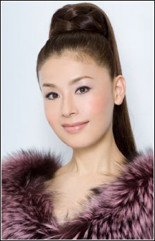
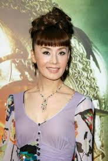
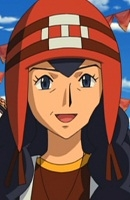

Mao Daichi is a Japanese actress and voice actress. Her real name is Mayumi Morita.
- Gender: Female
- Birthday: February 5, 1956
- Birthplace: Sumoto, Japan

|  |
Mao Daichi is a Japanese actress and voice actress. Her real name is Mayumi Morita.
|
 |
|---|
|  | Juanita |
|
Juanita is the mother of Damon and Carlita. She owns a souvenier shop selling various Victini-related goods during the Eindoak Harvest Festival. |